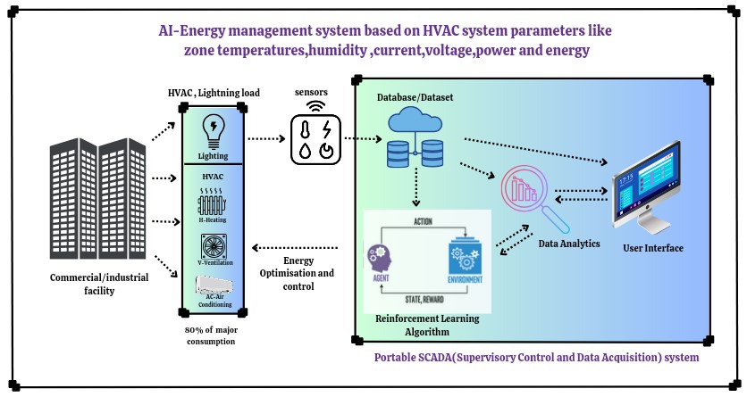

Projects
AI Powered Energy Management System
AI-powered Energy Management System integrates data acquisition,data analytics,advanced machine learing algorithms and a user-friendly dashboard interface to provide a holistic solution for industrial and commercial energy management. Through sophisticated data acquisition mechanisms, our system collects real-time data from various sources within the facility, including energy meters, sensors, and IoT devices. This data is then processed and analyzed using advanced machine learning algorithms and data analytics techniques to generate actionable insights and optimization recommendations. The user-friendly dashboard interface serves as the central hub for facility managers to access and visualize critical energy data, trends, and performance metrics in an intuitive manner. This dashboard provides comprehensive visibility into energy consumption patterns, equipment performance, and operational efficiency metrics, enabling users to make informed decisions and take proactive measures to optimize energy usage and reduce costs. By seamlessly integrating data acquisition with a user-friendly dashboard interface, our Energy Management System empowers facility managers to effectively monitor, analyze, and control energy usage with unprecedented precision and efficiency. This holistic approach ensures that users have the tools and insights they need to drive operational efficiency, reduce environmental impact, and achieve substantial cost savings, ultimately ushering in a sustainable and efficient future for industrial and commercial facilities.
Bluetooth-Controlled Robotic Arms(BlueArmBot)
"BlueArmBot" is a sophisticated humanoid robot project featuring articulate robotic arms that can be wirelessly controlled via Bluetooth technology. The project combines hardware and software elements, including servo motors, an Arduino Mega microcontroller, and a Bluetooth module for communication. The robot is programmed to respond to voice commands transmitted via a custom-designed Bluetooth voice-controlled app, allowing users to interact with the robot seamlessly. Commands such as "hello," "shake hand," "hands up," and "hands down" trigger corresponding movements in the robot's arms, accompanied by audio feedback through a connected speaker. The project aims to demonstrate the integration of robotics, wireless communication, and voice recognition technologies in a fun and interactive manner, showcasing the potential of modern automation systems in human-machine interaction.
Personal Portfolio Website
This portfolio website serves as a comprehensive showcase of my professional profile, projects, skills, and accomplishments. Designed with a clean and intuitive interface, it provides visitors with easy access to information about my background, education, and work experience. The website features dedicated sections for projects, allowing users to explore detailed descriptions and view associated images. Additionally, it highlights my skills and expertise, providing a glimpse into my technical abilities and competencies. With a responsive layout, the website ensures optimal viewing across various devices, enhancing accessibility for potential employers and collaborators. Overall, this portfolio website serves as a dynamic representation of my capabilities and serves as a valuable tool for networking and career advancement.